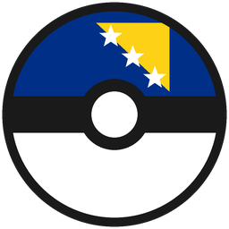

New to Cobblemon or Create? Start here.
Catch, train and battle Pokémon in the overworld. The wiki has everything — spawns, evolutions, items.
Spawns, stats, evolutions, items, breeding — the full reference.
wiki.cobblemon.com → 🌐Official site, news and the full Pokédex of what's in the mod.
cobblemon.com →Build contraptions, factories and vehicles with rotating gears and belts. The best teacher is built right into the game.
Every block and machine explained, with recipes and setups.
create.fandom.com → ▶️10-minute "Create for beginners" walkthroughs — great to watch first.
Watch on YouTube →